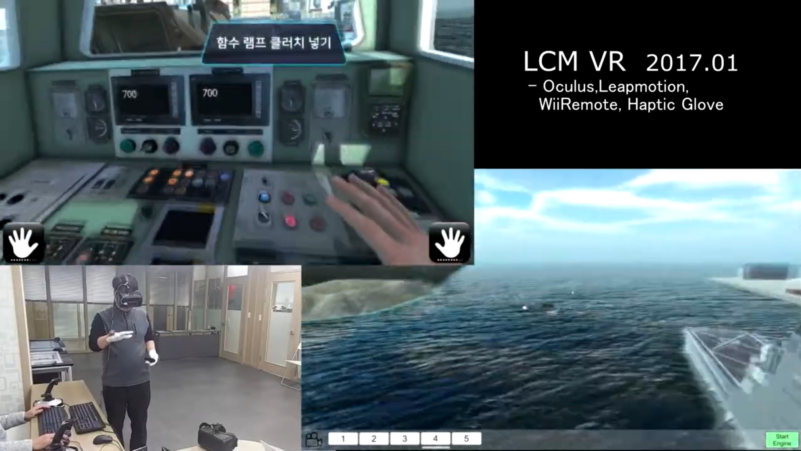
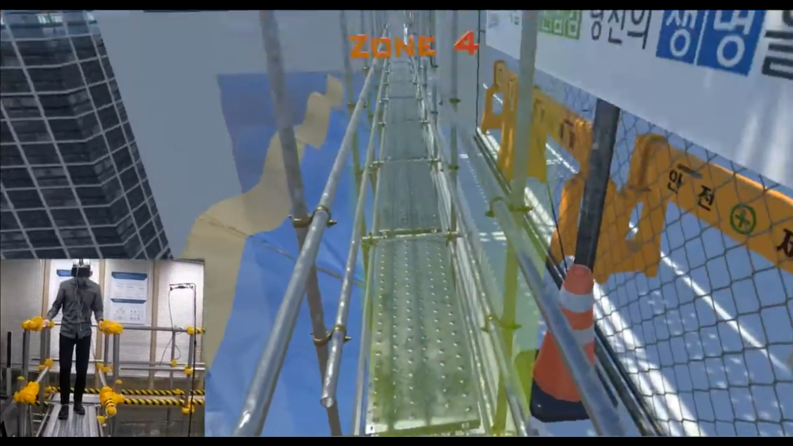
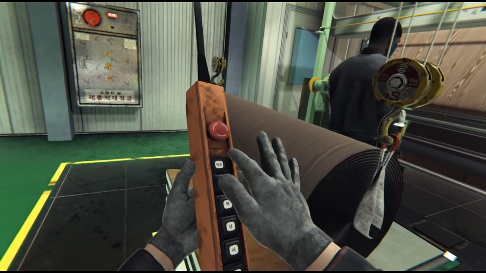
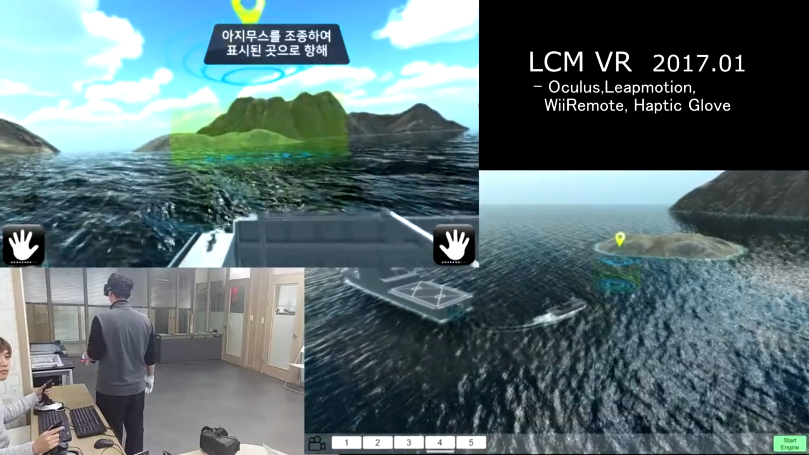
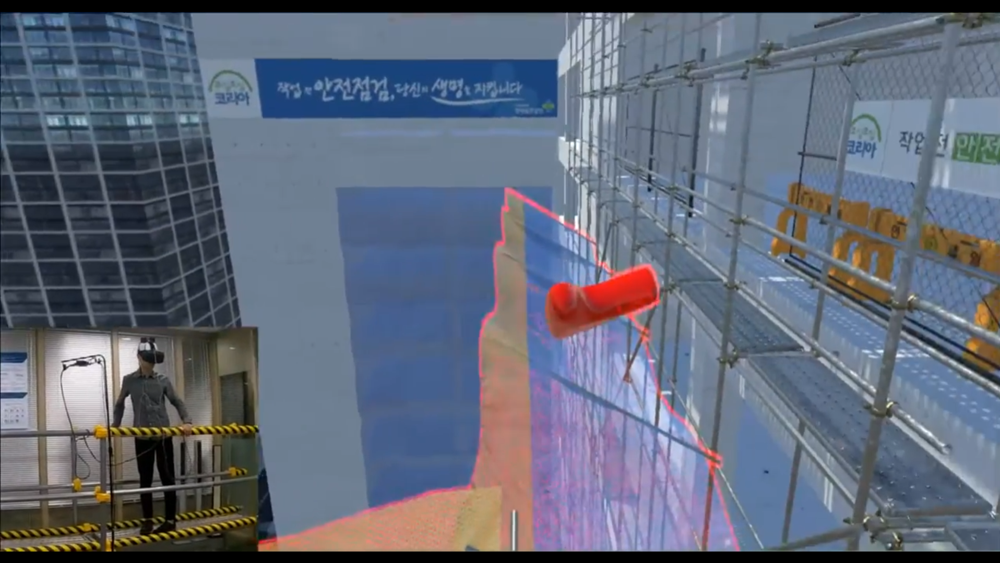
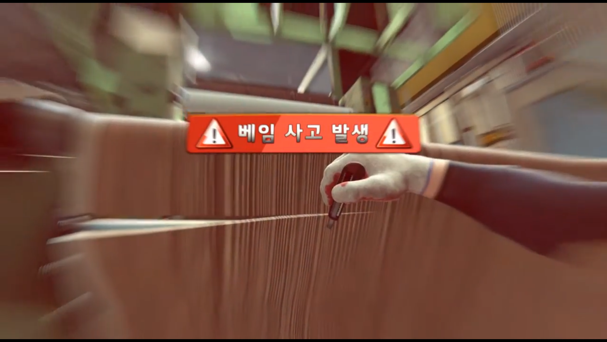

내 역할
Unity 런타임, 사고 시나리오 분기, 장치 연동, HMD 진행 안내, 설치와 납품 대응까지 맡았습니다.
배 조종 훈련, 건설현장 4D 안전교육, 인쇄공장 안전교육으로 이어진 초기 실감형 VR 프로젝트 묶음입니다.Unity 런타임, 사고 시나리오 분기, 장치 연동, 현장 설치와 납품까지 함께 다룬 현장형 XR 실무 축입니다.
해군, 한국산업안전보건공단, 한국가스공사, LG하우시스 현장교육으로 이어진 XR 시뮬레이터 레퍼런스입니다.
Unity 런타임, 사고 시나리오 분기, 장치 연동, HMD 진행 안내, 설치와 납품 대응까지 맡았습니다.
훈련과 안전교육은 화면만으로 끝나지 않아야 했고, 사용자의 행동에 따라 사고 연출과 장치 반응이 함께 바뀌어야 했습니다.
해군 훈련, 전국 안전교육실 보급, LG하우시스 재교육 요청으로 이어지며 초기 현장형 XR 레퍼런스를 만들었습니다.
이후 현장 설치, 하드웨어 설계, 산업 XR 흐름을 감당하게 된 출발점으로, 현장 제약을 코드와 장치로 함께 푼 경험입니다.
도메인은 달랐지만, 세 프로그램 모두 훈련 절차와 안전교육 흐름을 XR 안에서 정확하게 재현하는 데 초점을 맞췄습니다.
VR·조이스틱 기반 차기상륙함 조종 로직, HMD+PC RPC 멀티플레이 협력 미션, LeapMotion 선실 스위치/레버 상호작용을 구현했습니다.
감전, 낙하, 흔들림, 추락 사고 연출과 비계, 머리충격, 전기충격 장치 연동 제어를 넣고, 사용자 행동에 따라 사고 발생과 예방이 갈리는 분기를 만들었습니다.
인쇄기, 로봇 지그, 호이스트 크레인 사고 시나리오와 RS232 기반 전기충격장갑·압착장치 제어, HMD 안내와 내비게이션 흐름을 구현했습니다.



조종, 사고 연출, 장치 피드백, 작업 절차가 이어지는 장면을 담은 영상 세 개입니다.
이 시기부터 XR 개발은 코드만으로 끝나지 않았습니다. 장비 구성, 장치 연동, 설치, 시연, 교육 환경 이해가 함께 필요했습니다.
건설현장 안전교육에서는 비계 구조를 직접 설계해 흔들림과 낙하 체험을 둘 다 가능하게 만들었고, 이런 장치 설계와 조립 경험은 이후 안전교육실 납품 대응으로 이어졌습니다.
전시 설치·운영·철거, 공장·공사현장 견학, 하드웨어 조립, 영문 제품 설명 경험까지 합쳐져 지금의 현장형 시스템 엔지니어링 기반이 됐습니다.


